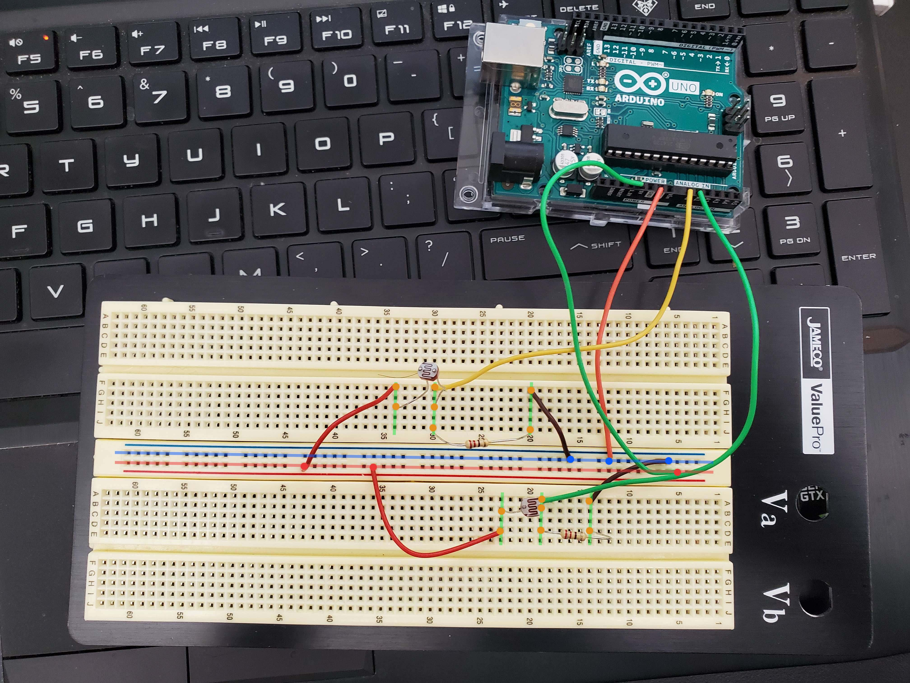

Find online tutorial: https://create.arduino.cc/projecthub/MisterBotBreak/how-to-use-a-photoresistor-46c5eb
For our tutorial, we will add a 2nd photoresistor onto the board to get a 2nd input.

1. Upload Arduino code to the board. Check the Arduino section for details.
2. Start inputs and outputs.
3. Start Wekinator and train.